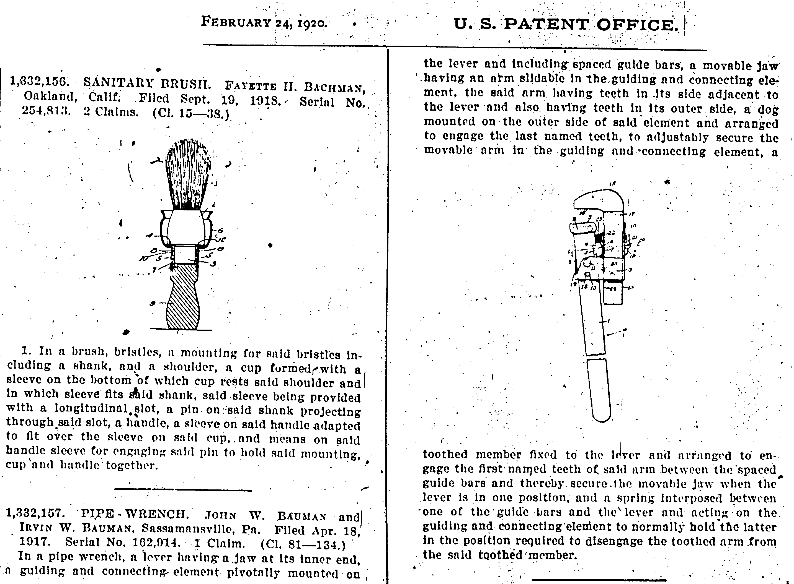
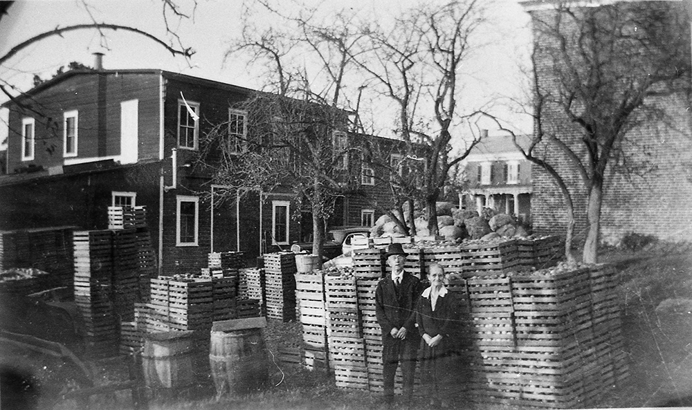
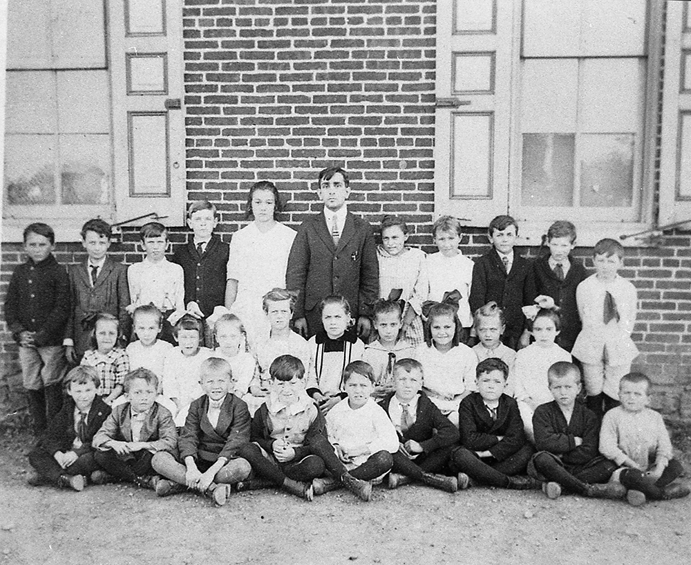

Irwin's family
John W. Bauman and Catherine T. Wiegner were married in about 1880. Both were from the area around Sassamansville (near Bally), Pennsylvania. They had a large family of ten children, all of whom had their mother's maiden name as their middle name:
Rose Wiegner (Frederick), 1882 Dec. 15 - 1980Mamie Wiegner, born 1885 Jan. 15
Lizzie Wiegner (Carmen), born 1886 Oct. 8
Harvey Wiegner, 1888 June 15 - 1890 May 22
Katie Wiegner, born 1890 April 19
Leanna Wiegner, born 1892 Jan. 19
Jacob Wiegner, born 1895 March 31
Irwin Wiegner, 1897 July 4 - 1986 July 22
Pearl Wiegner, died about 1928
Stanley Wiegner, 1903 - 1977.

John Bauman was an inventor and an entrepreneur. Throughout his life, he tried to market a number of his inventions, with varying degrees of success. He received a patent for his "Baumo Wrench", which was a type of adjustable pipe wrench that he and his son Irwin developed. He also sold "Bauman salve" which was an old family recipe. But the most successful of his ventures was "Bauman's apple butter".
John was originally a carriage maker, but in 1892 he decided that the carriage business was on its way out, so he decided to go into making apple butter commercially. To make the apple butter, he used his family's recipe, but his innovation was in the apparatus used to cook the apple butter. The apples were put in barrels rather than large kettles, and coils attached to a lid fit down inside the barrel. The apples were cooked when steam passed through the coils. This produced a very thick, dark brown apple butter. In the early days of the business some people brought their own apples to have them made into apple butter.
As the apple butter business expanded, the operation was set up in a shop in the small town of Sassamansville, with machinery for handling the apples, for putting the apple butter in jars, and for labeling the jars. When it was not apple season, the family operated a sawmill on the same premises. The apple butter business is still operated by Kathleen and Harvey John Bauman, a grandson of John (son of Stanley).
John always believed that there was gold in the hills of eastern Pennsylvania, and he was determined to find marketable deposits of it. He would frequently go prospecting for it, aided by his son Stanley. Although they never struck it rich, they did find enough platinum for Stanley to make his wife's wedding ring. Stanley became a high school teacher, but he continued to help his father with the apple butter business. Jacob and Irwin were sometimes a bit hot tempered, but Stanley was always even tempered and Irwin always felt close to him.
Although her husband was a man of ideas, Catherine Bauman was the one who took care of the practical aspects of taking care of the family. She often felt that John spent too much time in his search for gold and she was worried about their lack of income. There were also doubts from family members about the inventions until the apple butter business became a success.
Both the Bauman and Wiegner families were from a German background. The Baumans were Mennonites and the Wiegners were from the group known as Schwenkfelders. So the family spoke the dialect of German known as "Pennsylvania Dutch". Catherine was always proud of her Schwenkfelder background.
Irwin's education
Irwin remembered that his first year of school was difficult for him because everything was done in English. In fact, the students were not supposed to speak Pennsylvania Dutch in school, but only English. However, Irwin always did very well in school and was sometimes bored in class. One thing that Irwin remembered doing when he was bored in his early days in the one room school was practicing wiggling his ears. He put this skill to good use in his later years when he used it to amuse his grandchildren (he had unusually big ears). The skill was passed on to Iriwn's son, John H. Bauman, who could also wiggle his ears! When Irwin was older, he attended high school at the Perkiomen School in Pennsburg from 1912 to 1919 and he achieved very high grades in all of his subjects.
Irwin continued on in the field of education as a teacher. In a school district in eastern Pennsylvania, he was given the job of starting a high school. Because of that position, he chaired the teachers' meetings. It was at this time that he met his future wife, Mary Bonser, who was also a teacher in the district.